토요일 옥스포드 댕겨왔다
패딩턴역에서 갈아타는거 없이 한시간
생각보다 편했다
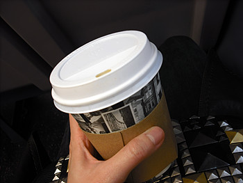
기차탈때는 커피가 손에 있어야함 ^^;;;;
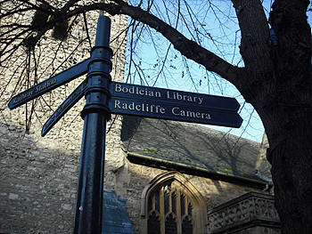
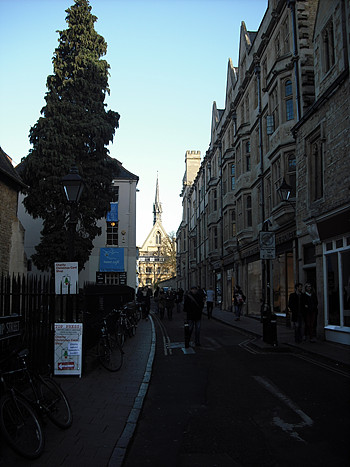
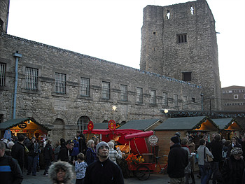
시내구경좀 하다가 오늘 목적인
oxford castle 크리스마스 마켓으로~
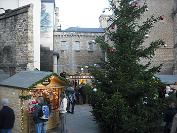
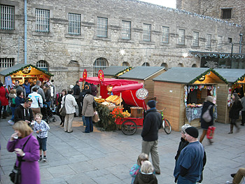
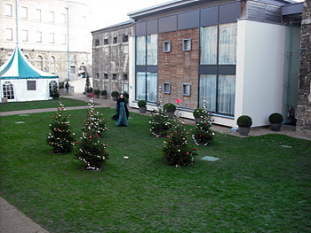
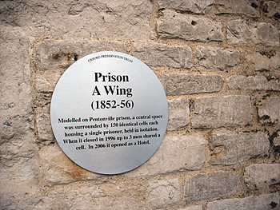
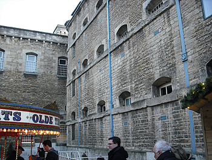
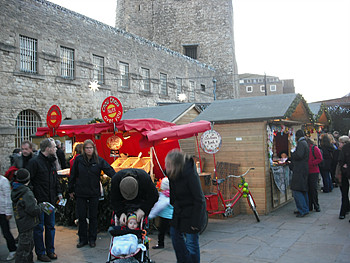
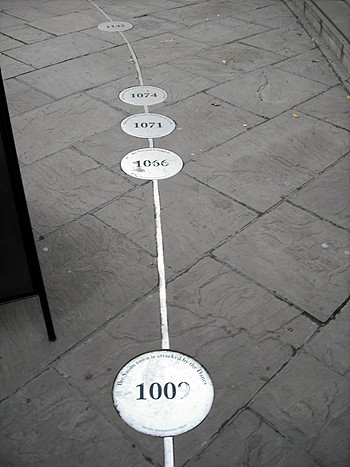
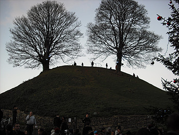
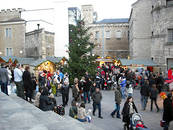
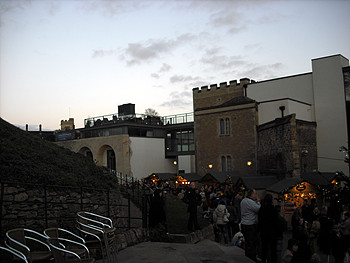
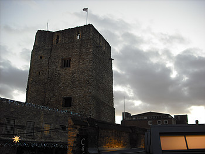
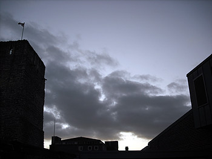
여기저기 오래된 건물이랑 centre에 다 모여있는 상점을 보니까
maidstone생각도 나구 옛날에 댕겨온 canterbury 생각도 난다
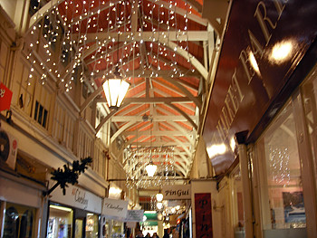
좁은 골목입구를 통해 들어간 상점가
의외로 굉장히 넓고 안이 복잡한 미로처럼
여기저기 연결되있어서 놀랬음
너무 늦게가서 거의 다 문닫는 분위기......OTL
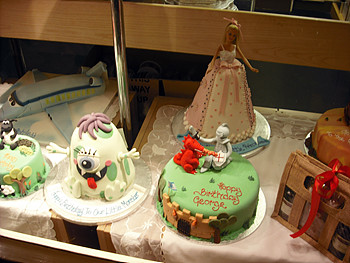
이 케이크가게 촘 짱이었음
데코 완전잘해!! +_+
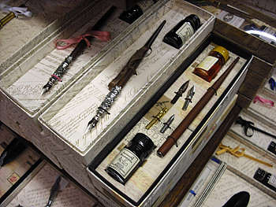
오래된(혹은 옛스타일의) 서적이나 문구를 파는 가게
오우 이 펜 넘 내취향 ㅜㅜ
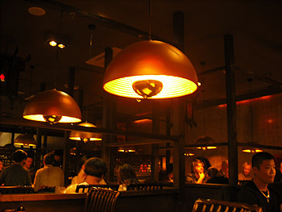
oxford에 왔으니 체인점 말구 local restaurant를 찾자!!
싶어서 돌아댕겼건만
눈에보이는건 죄다 런던에도 있는 체인 아님 펍........OTL
결국 차이니즈로 고고
정신없이 먹느라 음식사진도 읎다^^;;;;
시간도 좀 남고해서
다시 마켓쪽으로 돌아갔는데
건물옥상에서 인공눈을 뿌려주고있었다 ㅋㅋㅋ
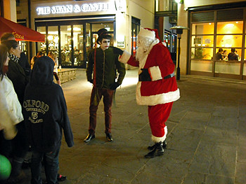
여기저기 보이던 퍼포먼스 하는 사람들
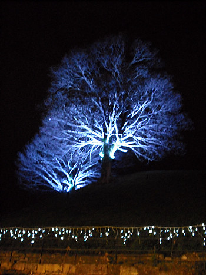
하루 여행 끗!!
(마켓 홈페이지)